Brief
長期幫星巴克製作禮品的禮品商，希望借助公司的創新能力及科技技術，可以做出不同以往的禮品設計。
客戶並不知道自己要什麼，所以需要花較多的時間投石問路。
最後，我們將此智能產品(隨行杯)導入溫度傳感器及G-sensor，並取代實體卡，創造全新的消費體驗。
Target
Role
與ID同仁執行產品發想，從用戶/場景/需求切入，運用市場現況調研、競品分析、用戶需求/期待分析、顧客消費行為分析等等方法進行研究
Pain Point
產品商業模式的期盼
在禮品屆相信大家對星巴克的杯子一點都不陌生，在不同的季節或節日總是會有推陳出新的產品做銷售。另外還有加入星巴克會員後，會有一張可累積星禮程的儲值卡，在消費時需要做出示。我們希望產品加入智能科技設計後，可以延長產品的週期性，但一樣可以隨著不同季節跟節日而有所不同。
面臨的挑戰
然而，因為我們面對的角色是禮品商，而設計出的商品最終還是要看星巴克買不買單。在一開始的溝通上花比較多時間，因為對於禮品商來說，他們需要的是一個有話題性商品，思維上會比較偏向短期銷售，而不是看長遠的商品，所以在產品的成本上也壓得非常低。但又想要朝3C商品發展，所以在成本有限的情況下，我們必須想出富含科技技術的商品在裡頭。
市場現況與競品分析
我們開始蒐集所有市面上的智能杯並做分類，並做成表格加以分析：
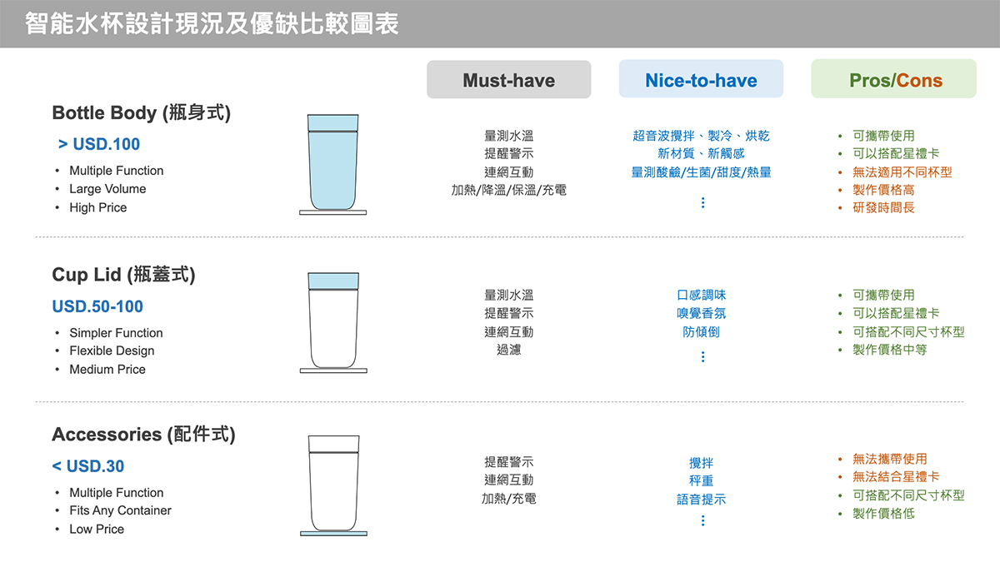經過研究分析後可看出，朝向「瓶蓋式」的智能水杯設計方向效益是相對比較高的。因此，開始制定出產品的基本規格及功能：
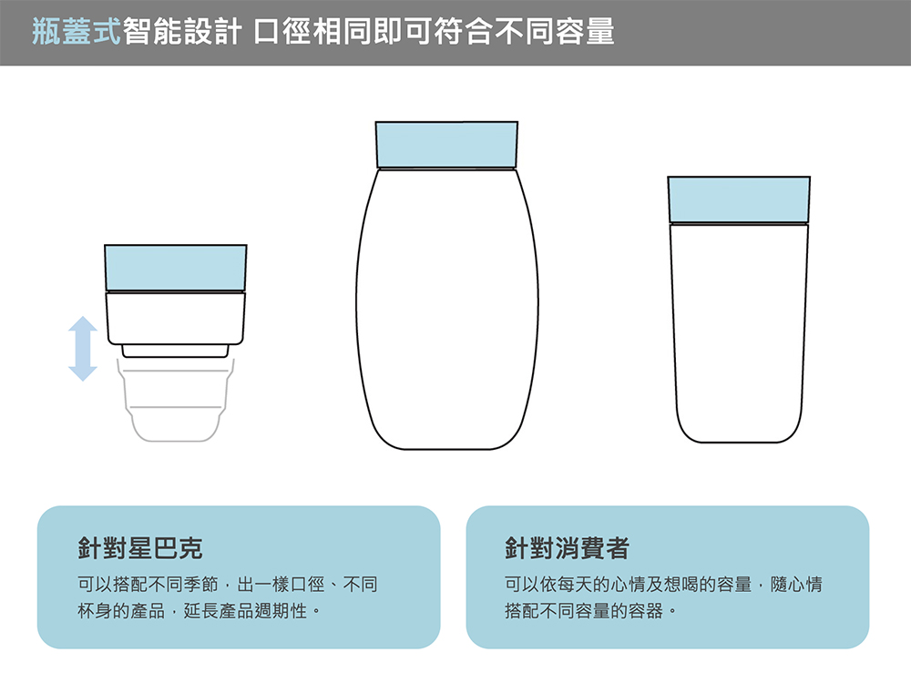 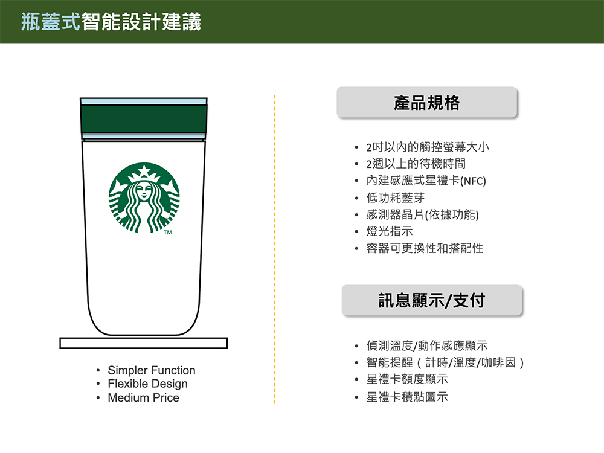星巴克的實際消費體驗
我們實際到星巴克門市，拿自己的環保杯點餐，並整理出對於顧客及店員的一些痛點：
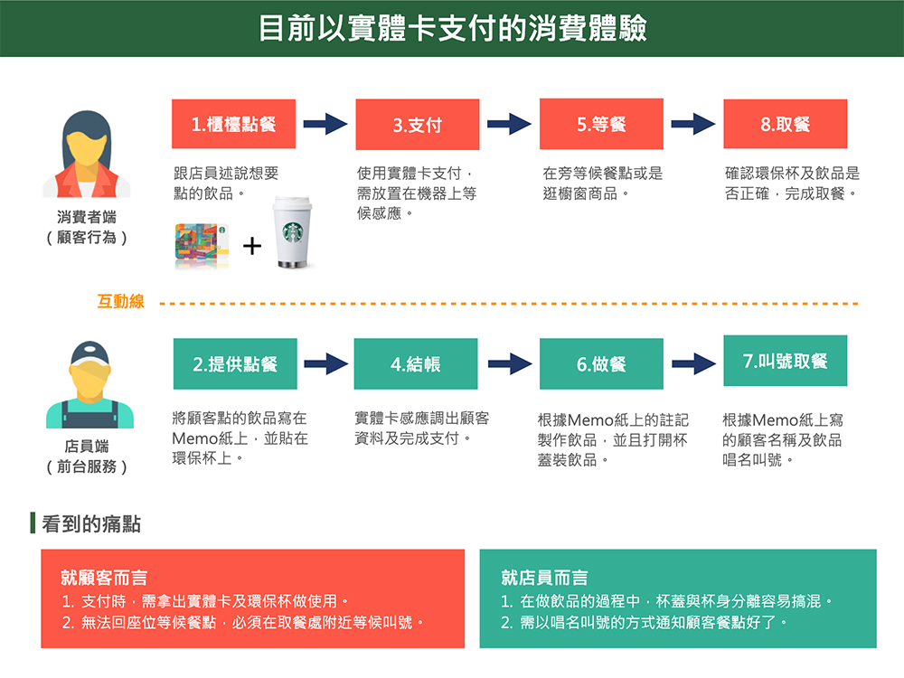因此，我們透過制定一套新的服務流程，並搭配我們設計的智能杯(智能模組)，來解決買方與賣方的不便利性，進而改善整個消費體驗。
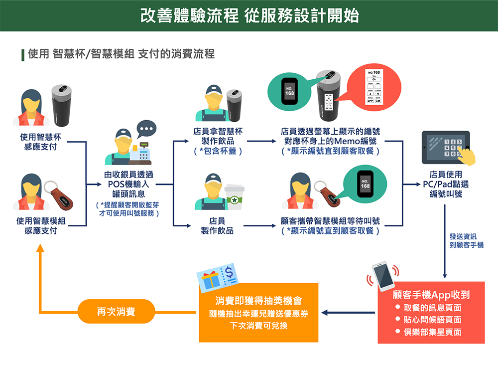重新認識咖啡小知識
會去星巴克消費的顧客，不外乎就是愛喝咖啡的族群。因此，我們希望智能杯可以有更多關於咖啡的功能，因此我們針對咖啡的知識也做了一些研究。例如：水溫控制、沖泡計時，甚至是提醒最佳飲用時間等等。這些功能不外乎是希望顧客從消費到喝完整杯咖啡的體驗都是非常好的。
我們的詮釋
因此，我們設計一個智能模組，可以將隨行杯作為載體，也可以是一個吊飾，也可以是穿戴手環，甚至是任何星巴克周邊，並且搭配APP執行更多元的功能及顯示。
此外，在不同的節日時，對於星巴克而言，可以推出對應節日的隨行杯款式，甚至是任何星巴克周邊；而對用戶而言，不僅可以購買到季節限定款式的隨行杯，還可以隨心情搭配不同的杯身。
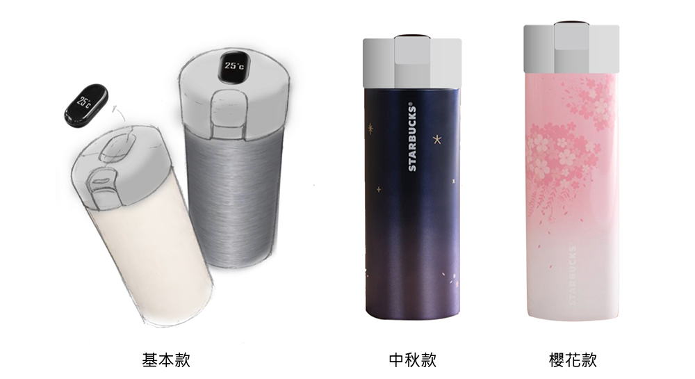Highlight
整個設計提案包含智能杯/智能模組概念設計及手機APP介面設計。
智能杯/智能模組概念設計：因應不同的杯款配置模組，並著重於介面操作、拆卸、充電等體驗設計，並已開蓋方式分成三種類型的Concept：
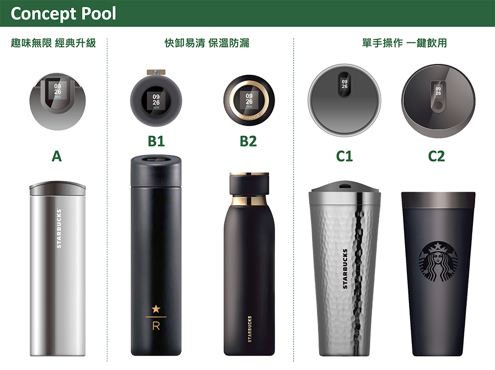Phone APP介面設計：著重在整個用戶消費流程體驗設計
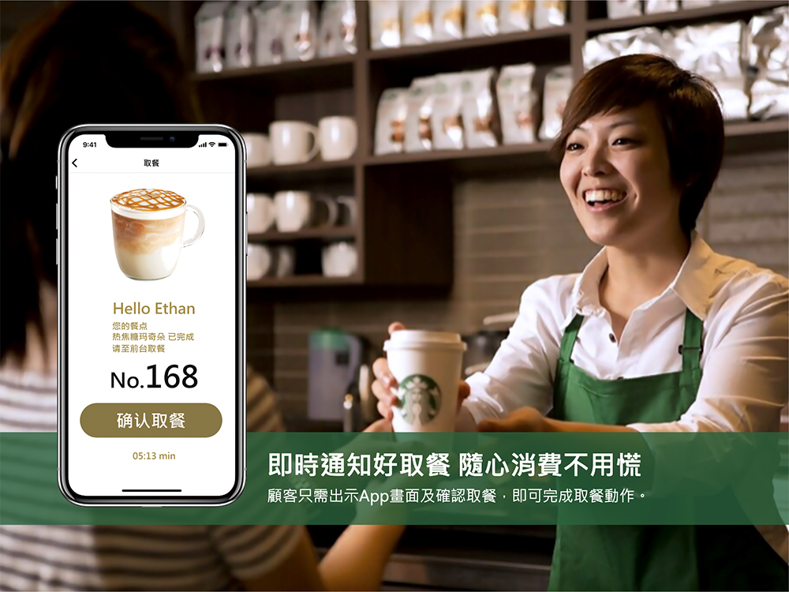 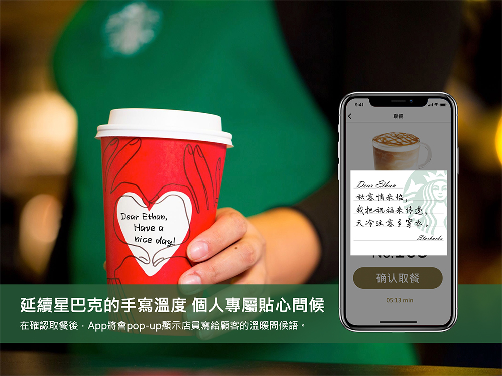 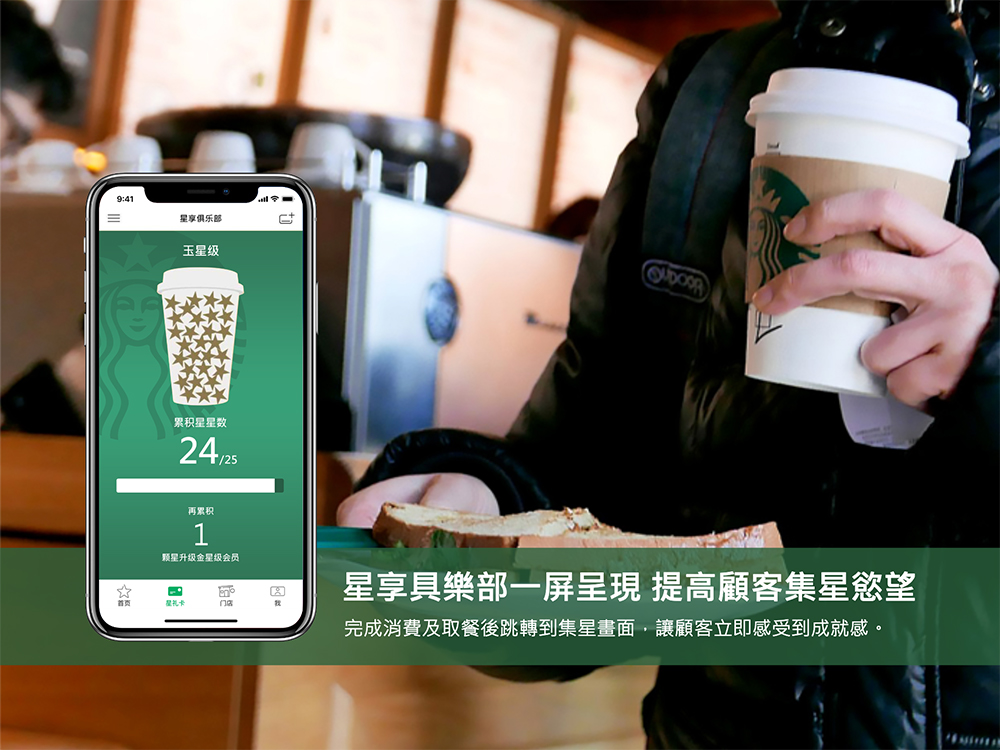 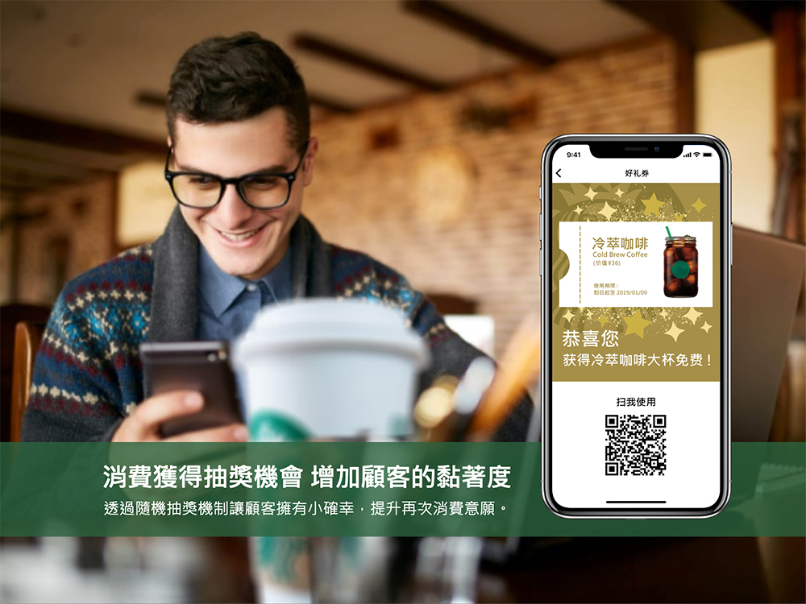Process Point
Self-Review
見識到不同產業的大鴻溝
當因為禮品商與科技企業在製作產品上的思維非常的不一樣，所以往後若有這樣不同產業的合作，應該要花時間了解對方的產業運作模式，更能幫助了解對方想要的是什麼，減少來回多次提案的次數。
建構一套服務設計體驗不是小事情
有時看似只是做一項產品設計，其實實質上要解決根本問題，必須連服務設計這塊一同切入思考，並且建構一套完整的ecosystem。但往往要推動並不是一件容易的事，尤其又牽扯了支付系統及金流這塊，就不是一件小的事情。若客戶沒有立即改變的需求下，就會變得難以進行下一步。
不同國家的星巴克消費模式不一定相同
一開始我們親自在台灣星巴克做調研，後來上網一查才發現，中國的星巴克消費方式跟台灣並不相同，因為禮品商是中國的禮品代理，導致我們重新做調研，但也只能透過二手資料做蒐集。因此，下次再遇到類似案子，一定要先就該國家的相關資訊做蒐集，才不會導致烏龍事件發生。